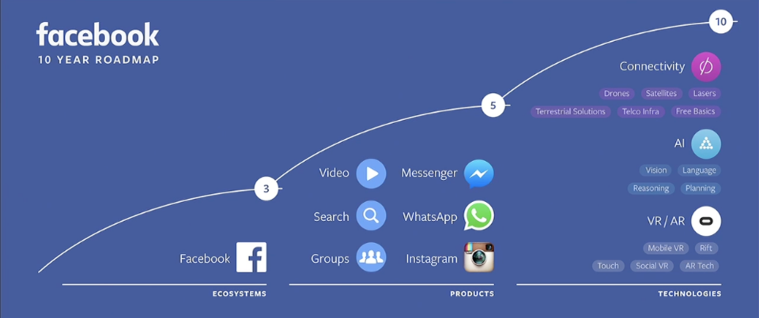

- 00 开篇词 打造千万用户的世界级产品.md.html
- 01 什么是优秀的产品经理？.md.html
- 02 硅谷的产品经理是什么样子的？.md.html
- 03 科技巨头和初创公司的产品经理有什么不同？.md.html
- 04 产品经理和项目经理有什么区别？.md.html
- 05 硅谷产品经理每天在做什么？.md.html
- 06 硅谷产品经理们都来自什么背景？.md.html
- 07 如何寻找用户需求？.md.html
- 08 目标客户和用户画像.md.html
- 09 手把手教你写用例： 优化微信加好友的功能.md.html
- 10 什么是最小化可行产品（MVP）？.md.html
- 11 案例：产品发布之前出了乱子，如何权衡取舍？.md.html
- 12 制定产品成功指标.md.html
- 13 如何撰写产品需求文档？.md.html
- 14 如何用数据做出产品决定？.md.html
- 15 如何组织有效的会议？.md.html
- 16 如何和工程师有效沟通？.md.html
- 17 如何与设计师有效沟通？.md.html
- 18 如何搞定A_B测试？.md.html
- 19 增长黑客的核心公式.md.html
- 20 想要增长，你的团队需要高效的工作流.md.html
- 22 硅谷高管的UIE（Understand, Identify, Execute）增长论.md.html
- 23 增长的核心在于减少用户阻力.md.html
- 24 产品增长的代价，如何权衡取舍？.md.html
- 25 三分靠策略 七分靠执行.md.html
- 26 为什么加班很久但是没成果？产品开发流程有问题.md.html
- 27 如何激励和管理比你资深的工程师、设计师？.md.html
- 28 产品经理的晋升秘密.md.html
- 29 你需要一个产品路线图.md.html
- 30 如何制定产品优先级 ？.md.html
- 31 好的产品经理和卓越的产品经理.md.html
- 32 产品经理面试考察的是什么？.md.html
- 33 如何提升产品感（product sense）？.md.html
- 34 如何提升产品经理的综合素质？.md.html
- 35 非计算机专业也能做产品经理？.md.html
- 36 模拟一场硅谷的产品经理面试.md.html
- 尾声 每个世界级的产品都有其使命.md.html
- 新书首发 《硅谷产品：36讲直通世界级产品经理》.md.html
- 捐赠
29 你需要一个产品路线图
产品路线图，又称Roadmap，是很多人说起产品经理时最先想到的内容，而这也确实是产品经理工作中非常重要的一部分。
市面上关于产品路线图的文章有很多，制作路线图的软件也是应接不暇，但是我发现很多人讨论得更多的是产品路线图是什么格式、要用什么软件画，却忽略了产品路线图本来的目的，至有些人把产品路线图和需求文档的概念混淆了。
那么，今天我就跟你分享一下，为什么要做产品路线图，以及我平时怎么做产品路线图。
产品路线图的目的
首先，产品路线图的目的是让团队成员清楚知道产品要往哪个方向走，怎么走，以及在什么时间要做什么事情。
路线图的英文叫作Roadmap，由road和map两个单词组成。说到底，路线图首先要告诉团队成员我们要去哪，路在何方，也就是road；然后告诉他们我们应该怎么去，如何达到目的，这就是map。
所以，产品路线图一定要立足于产品的愿景（vision），告诉团队成员我们如何一步步实现产品的愿景。
给你举一个Facebook大老板扎克伯格制定产品路线图的例子。

这是Facebook未来十年的产品路线图，由扎克伯格在2016年提出，愿景是连接整个世界，让人与人之间的距离更近。那么如何实现呢？
在未来三年（2016~2019年），我们立足于Facebook生态系统，让Facebook继续帮助人们更好地与他人连接。
在未来五年（2016~2021年）， 我们将从视频、搜索、小组、Messenger、WhatsApp、Instagram着手，让世界各地的人通过Facebook旗下的这些产品，分享各种各样的内容（图片、视频、文字等）。
在未来十年（2016~2026年），Facebook将会大力发展核心技术，在网络硬件、人工智能、虚拟现实等方向，为人与人之间的连接作出质的贡献。
从Facebook十年的产品路线图中，你可以看出，扎克伯格首先是从整个公司的愿景出发，然后层层深入；从近期的三年计划着手，然后步步深入，最后十年计划一出来，整个公司仿佛看到了一个让整个世界连接更紧密的蓝图。
当然，大部分产品经理管的是一个具体的产品，也不会做一个十年规划的路线图，但是产品路线图的目的都是一样的：先立足于产品要达到的最终效果，以长期愿景为目的，然后一步一步告诉团队成员如何实现。
但是，有些产品经理的路线图，说白了就是一个任务清单，列出了一个个要完成的任务，团队成员看完后，并不清楚到底要达到什么目的，成功指标是什么，这最多算一个项目管理档案，不能叫作产品路线图。
一个好的产品路线图，应该是你读完后：
- 首先，明确产品的长期愿景；
- 然后，明确分为哪几个阶段，每个阶段的成功标准是什么，每个阶段之间有什么样的逻辑关系，才能实现最后的长期愿景；
- 最后，明确每个阶段我们具体要做什么，以及怎么做。
一般来讲，越是高级的产品经理，想得越远，产品路线图横跨的时间范围越广，这种产品路线图的难度也越高。
好的产品路线图，团队成员看完后，应该有种“哇塞，我做的事情真酷”“哇塞，我看到了我们一步一步如何实现最终的成功”这样的感觉，并且团队的每个人都知道：
- 我们这半年要做的事情，和长期愿景到底有什么关系；
- 我们这半年做的事情，分为哪几个部分，重要性和优先级都是什么。
产品路线图的内容
我一般会有整个产品团队的路线图，和每个产品的路线图。我的产品团队负责很多产品，所以整个团队的路线图更多得是写我们这半年要达到什么目标，这个目标如何帮助我们离成功更进一步。
下面我通过一个具体的实例，向你展示一下，我一般会按照什么样的框架，来写产品团队的路线图。
- 团队愿景： 成为最有效的网红和粉丝之间沟通互动的工具，这也是我们团队一直以来的愿景。这个愿景的实现包含了我的产品团队下的许多网红产品，比如粉丝给网红打赏，网红和超级粉丝互动等产品。
- 成功是什么样子？ 网红首选我们的工具和粉丝沟通，粉丝和网红每周至少互动一次。
- 下半年的成功是什么样子的？ 比如，50%粉丝和网红每周至少互动一次。
- 下半年如何实现这样的成功：
- 帮助网红找到铁粉。（P0）
- 给铁粉特别的徽章；
- 铁粉排行榜。
- 帮助新粉丝找到自己感兴趣的网红。（P0）
- 网红发现广场；
- 每天推荐5个网红给新粉丝用户。
- 提供网红和铁粉之间互动的工具。（P1）
- 让网红直接选定有特点的粉丝进行互动；
- 让网红举办针对铁粉的抽奖活动；
- 方便网红创造铁粉专属内容的工具。
- 帮助网红找到铁粉。（P0）
以上三个重点问题是我们这半年工作的核心，我们将通过上面的7个产品功能解决。
有时，我还会详细说清楚每个部分的优先级，让团队成员可以优先解决最重要的问题，以最高效的方式实现成功指标。 比如，帮助网红找到铁粉最重要， 那这个问题就是最优先的，用P0（priorioty = 0，优先级最高）表示，提供网红和铁粉之间互动的工具的优先级是P1。
注意，我并没有在“如何实现这样的成功”这部分，直奔要实现的7个小功能，而是先拆分为三个重点，然后再说明解决每个重点问题，需要实现的具体功能。
通过这个整个产品团队的路线图的例子，我要表达的重点是：产品路线图中，一定要先明确团队要实现的愿景以及成功的标准，然后再说当前的计划和成功标准，这样团队成员很快就能知道我们当前的计划对总体计划有什么帮助。
有的时候，我会在“成功是什么样子”这个部分加上日期，这样才让大家有紧迫感。
比如，我们要在2019年上半年实现：网红首选我们的工具和粉丝沟通，粉丝和网红每周至少互动一次。
那么，2018年上半年我们要实现50%的粉丝和网红每周至少互动一次，2018年下半年我们要达到75%的粉丝和网红每周至少互动一次的指标，以及我们的产品要成为网红的前三个选择。
这样，2019年上半年我们就可以实现最终的成功。
对于一个粉丝给网红打赏的产品，你可以这么写路线图：
产品愿景： 让网红可以以赚取粉丝的打赏为生；让粉丝得到网红特别的关注。
成功标准： 10000个网红能够达到月收入10000元。
2018年上半年的成功标准： 1000个网红能够达到月收入5000元。
2018年下半年的成功标准： 5000个网红能够达到月收入5000元，1000个网红达到月收入10000元。
2019年上半年成功标准： 10000个网红能够达到月收入10000元。
然后，我们具体说2018年上半年的成功如何实现：
目标是1000个网红能够达到月收入5000元，为此我们需要，让已经有粉丝打赏的200个网红得到更多的赏金，让还没有得到任何打赏的其他网红（假设目前有3000个）中的800个月收入达到5000元。
接下来，你就可以按照上面整个团队路线图的逻辑划分出重点问题了：
- 是让粉丝加大打赏金；
- 培养更多粉丝打赏的习惯；
- 是增加粉丝用户的数量。
然后，你就可以按照上面整个团队的产品路线图的逻辑，设计每个部分的产品功能，来能实现成功目标了。
总结
今天我跟你分享的主题是，产品路线图。接下来，我给你提炼一下今天内容的要点：
- 产品路线图的目的是制定产品阶段性的计划，从而让产品实现最终的愿景。这要求产品经理从愿景出发，为每一个发展阶段制定成功标准和策略，而不只是简单罗列亟待完成的事项。
- 即使一个产品团队负责一个产品线的多个产品，也应该有整个团队的产品路线图，以及每个产品的产品路线图。
- 产品路线图应该由产品愿景、成功标准、现阶段成功标准、现阶段发展重点、每个发展重点下的具体产品功能这些部分组成。通过划分现阶段的发展重点，增加产品路线图的逻辑性、可读性，并进一步划分产品团队，让每个人都能认识到自己的工作如何帮助团队实现产品愿景。
思考题
如果让你设计抖音未来三年和2018年下半年的产品路线图，你会怎么写？
欢迎你给我留言。
© 2019 - 2023 Liangliang Lee. Powered by gin and hexo-theme-book.